USSR · Tier VII
All nations and tiers · EU v20410 → RU v14600ru · 3 November 2026
A-44 · Tier VII
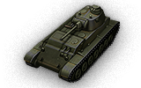
Gun handling
Aim time (s) EU 2.30  RU 2.78
RU 2.78
Dispersion (m/100 m) EU 0.38 RU 0.41
Dispersion · damaged EU 0.77 RU 0.82
Elevation (°) EU 20 RU 15
Depression (°) EU 4 RU 3
Mobility
Forward speed on soft terrain (km/h) EU 39.44 RU 39.09
Power/weight (hp/t) EU 16.58 RU 16.43
Turret traverse (°/s) EU 41.72 RU 39.63
Tank traverse (°/s) EU 57.36 RU 45.89
Tank traverse on hard terrain (°/s) EU 59.07 RU 51.95
Tank traverse on medium terrain (°/s) EU 51.68 RU 45.46
Tank traverse on soft terrain (°/s) EU 25.84 RU 22.73
Armor & health
Health EU 1 200 RU 1 100
Health · engine EU 240 RU 120
IS · Tier VII
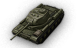
Mobility
Forward speed on soft terrain (km/h) EU 26.85 RU 26.49
Engine power (hp) EU 750 RU 740.10
Power/weight (hp/t) EU 16.22 RU 16.01
Tank traverse (°/s) EU 43.81 RU 36.50
Tank traverse on hard terrain (°/s) EU 45.57 RU 41.35
Tank traverse on medium terrain (°/s) EU 35.81 RU 32.49
Tank traverse on soft terrain (°/s) EU 21.80 RU 19.77
Armor & health
Health EU 1 350 RU 1 230
IS-2 shielded · Tier VII
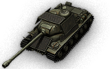
Armor & health
Health EU 1 270 RU 1 230
IS-2M · Tier VII
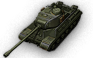
Mobility
Forward speed on soft terrain (km/h) EU 23.19 RU 22.63
Engine power (hp) EU 650 RU 634.37
Power/weight (hp/t) EU 13.40 RU 13.08
KV-122 · Tier VII
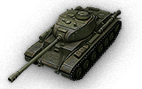
Firepower
DPM (HP/min) EU 1 835.05  RU 1 906.73
RU 1 906.73
Rate of fire (rounds/min) EU 4.71 RU 4.89
Reload time (s) EU 12.75 RU 12.27
Gun handling
Aim time (s) EU 3.07 RU 2.78
Dispersion (m/100 m) EU 0.44 RU 0.40
Dispersion · damaged EU 0.88 RU 0.81
Armor & health
Health EU 1 200 RU 1 400
KV-3 · Tier VII
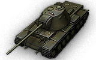
Mobility
Forward speed on medium terrain (km/h) EU 32 RU 31.61
Forward speed on soft terrain (km/h) EU 19.90 RU 19.24
Reverse speed (km/h) EU 11 RU 10
Engine power (hp) EU 820 RU 792.96
Power/weight (hp/t) EU 12.02 RU 11.63
Tank traverse (°/s) EU 26.08 RU 18.77
Tank traverse on hard terrain (°/s) EU 27.47 RU 22.33
Tank traverse on medium terrain (°/s) EU 21.58 RU 17.54
Tank traverse on soft terrain (°/s) EU 13.14 RU 10.68
Armor & health
Health EU 1 450 RU 1 400
LTG · Tier VII
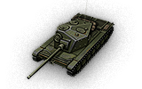
Mobility
Forward speed (km/h) EU 70 RU 63
Forward speed on hard terrain (km/h) EU 70 RU 63
Forward speed on medium terrain (km/h) EU 70 RU 63
Forward speed on soft terrain (km/h) EU 56.46 RU 48.93
Reverse speed (km/h) EU 23 RU 20
Engine power (hp) EU 750 RU 650
Power/weight (hp/t) EU 29.67 RU 25.71
Tank traverse (°/s) EU 58.41 RU 50.06
Tank traverse on hard terrain (°/s) EU 61.84 RU 60.72
Tank traverse on medium terrain (°/s) EU 55.65 RU 54.65
Tank traverse on soft terrain (°/s) EU 34.78 RU 34.15
Armor & health
Health EU 1 000 RU 880
S-51 · Tier VII
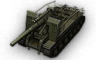
Penetration (mm)
EU  HE 52 /
HE 52 /  HE 65 /
HE 65 /  AP 258 → RU
AP 258 → RU  HE 51 /
HE 51 /  AP 258
AP 258
Damage (HP)
EU  HE 900 /
HE 900 /  HE 1200 /
HE 1200 /  AP 600 → RU
AP 600 → RU  HE 1200 /
HE 1200 /  AP 650
AP 650
Firepower
DPM (HP/min) EU 1 076.90 RU 1 501.92
Rate of fire (rounds/min) EU 1.20 RU 1.25
Reload time (s) EU 50.14 RU 47.94
Explosion radius EU 10.40 RU 8
Stun duration · maximum (s) EU 28 → RU —
Stun duration · minimum (s) EU 12.60 → RU —
Shell velocity (m/s) EU 425 RU 480
Max range (m) EU 1 263.11 RU 1 467.52
Potential damage EU 10 800 RU 14 400
Gun handling
Aim time (s) EU 6.04 RU 5.75
Dispersion (m/100 m) EU 0.80 RU 0.76
Dispersion · damaged EU 1.59 RU 1.51
Mobility
Tank traverse on hard terrain (°/s) EU 24.03 RU 24.02
Tank traverse on medium terrain (°/s) EU 20.83 RU 20.82
Tank traverse on soft terrain (°/s) EU 12.50 RU 12.49
Armor & health
Health · ammo rack EU 190 RU 90
Miscellaneous
Shell cost EU 1 910 RU 2 270
SU-100M1 · Tier VII
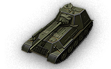
Mobility
Tank traverse on hard terrain (°/s) EU 25.68 RU 25.67
Tank traverse on medium terrain (°/s) EU 20.18 RU 20.17
Tank traverse on soft terrain (°/s) EU 13.45 RU 13.44
Armor & health
Health EU 900 RU 850
SU-14-1 · Tier VII
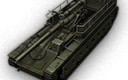
Penetration (mm)
EU  HE 52 /
HE 52 /  HE 65 /
HE 65 /  AP 258 → RU
AP 258 → RU  HE 51 /
HE 51 /  AP 258
AP 258
Damage (HP)
EU  HE 900 /
HE 900 /  HE 1200 /
HE 1200 /  AP 600 → RU
AP 600 → RU  HE 1200 /
HE 1200 /  AP 650
AP 650
Firepower
DPM (HP/min) EU 1 058.68 RU 1 472.47
Rate of fire (rounds/min) EU 1.18 RU 1.23
Reload time (s) EU 51.01 RU 48.90
Explosion radius EU 10.40 RU 8
Stun duration · maximum (s) EU 28 → RU —
Stun duration · minimum (s) EU 12.60 → RU —
Shell velocity (m/s) EU 425 RU 480
Max range (m) EU 1 263.11 RU 1 467.52
Potential damage EU 14 400 RU 19 200
Gun handling
Aim time (s) EU 6.33 RU 5.94
Dispersion (m/100 m) EU 0.79 RU 0.76
Dispersion · damaged EU 1.57 RU 1.51
Miscellaneous
Shell cost EU 1 910 RU 2 270
SU-152 · Tier VII
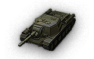
Penetration (mm)
EU  HEAT 190 /
HEAT 190 /  HEAT 240 /
HEAT 240 /  HE 86 → RU
HE 86 → RU  AP 175 /
AP 175 /  APCR 217 /
APCR 217 /  HE 64
HE 64
Damage (HP)
EU  HEAT 700 /
HEAT 700 /  HEAT 700 /
HEAT 700 /  HE 910 → RU
HE 910 → RU  AP 390 /
AP 390 /  APCR 390 /
APCR 390 /  HE 530
HE 530
Firepower
DPM (HP/min) EU 2 474.92 RU 3 298.14
Module damage EU 203 RU 165
Rate of fire (rounds/min) EU 3.54 RU 8.46
Reload time (s) EU 16.97 RU 7.09
Caliber EU 152 RU 122
Shell velocity (m/s) EU 750 RU 800
Normalization EU 0 RU 5
Ricochet angle EU 85 RU 70
Spaced armor pen loss EU 0.50 RU 0
Ammo capacity EU 26 RU 32
Potential damage EU 18 200 RU 12 480
Gun handling
Aim time (s) EU 3.07 RU 2.78
Dispersion (m/100 m) EU 0.46 RU 0.39
Dispersion · damaged EU 0.92 RU 0.79
Mobility
Forward speed on medium terrain (km/h) EU 39.83 RU 37.63
Forward speed on soft terrain (km/h) EU 24.24 RU 22.91
Reverse speed (km/h) EU 12 RU 11
Engine power (hp) EU 670 RU 634.37
Weight (kg) EU 45 735 → RU 45 825
Power/weight (hp/t) EU 14.65 RU 13.84
Tank traverse (°/s) EU 33.38 RU 23.99
Tank traverse on hard terrain (°/s) EU 34.34 RU 27.29
Tank traverse on medium terrain (°/s) EU 26.98 RU 21.44
Tank traverse on soft terrain (°/s) EU 16.42 RU 13.05
Armor & health
Health EU 900 RU 870
Health · engine EU 240 RU 190
Track repair time (s) EU 11.70 RU 12.03
Miscellaneous
Stationary camo · after firing EU 2.36 RU 3.13
Moving camo · after firing EU 1.41 RU 1.87
Shell cost EU 1 034 RU 1 025
T-34M-54 · Tier VII
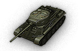
Gun handling
Aim time (s) EU 2.88 RU 2.11
Dispersion (m/100 m) EU 0.39 RU 0.35
Dispersion · damaged EU 0.79 RU 0.71
T-43 · Tier VII
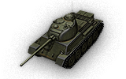
Penetration (mm)
EU  AP 164 /
AP 164 /  APCR 212 /
APCR 212 /  HE 44 → RU
HE 44 → RU  AP 144 /
AP 144 /  APCR 194 /
APCR 194 /  HE 44
HE 44
Damage (HP)
EU  AP 220 /
AP 220 /  APCR 220 /
APCR 220 /  HE 300 → RU
HE 300 → RU  AP 180 /
AP 180 /  APCR 180 /
APCR 180 /  HE 300
HE 300
Firepower
Rate of fire (rounds/min) EU 9.48 RU 11.59
Reload time (s) EU 6.33 RU 5.18
Potential damage EU 10 560 RU 8 640
Gun handling
Aim time (s) EU 2.11 RU 2.21
Dispersion · damaged EU 0.69 RU 0.71
Dispersion · moving EU 0.14 RU 0.16
Dispersion · tank traverse EU 0.14 RU 0.16
Mobility
Forward speed (km/h) EU 55 RU 51
Forward speed on hard terrain (km/h) EU 55 RU 51
Forward speed on medium terrain (km/h) EU 55 RU 51
Forward speed on soft terrain (km/h) EU 40.95 RU 34.64
Engine power (hp) EU 750 RU 634.37
Power/weight (hp/t) EU 21.52 RU 18.20
Tank traverse (°/s) EU 52.15 RU 39.63
Tank traverse on hard terrain (°/s) EU 54.71 RU 43.47
Tank traverse on medium terrain (°/s) EU 45.59 RU 36.23
Tank traverse on soft terrain (°/s) EU 27.36 RU 21.74
Armor & health
Health EU 1 200 RU 1 100